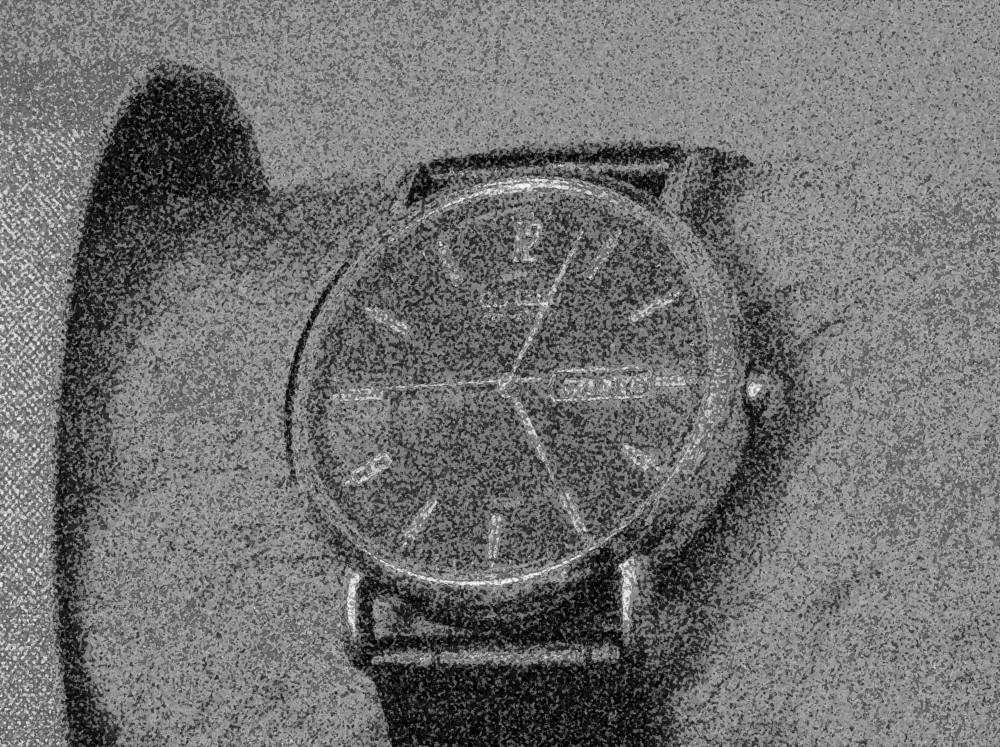

Psychogenic Disorders

- Neuro-ophthalmic manifestations that are partly or entirely of psychogenic origin
- May be very difficult to distinguish from organic disorders
-
Common forms
- Visual acuity loss
- Visual field loss
- Monocular diplopia
- Spasm of the near reflex
- Convergence insufficiency
- Pseudoptosis from orbicularis oculi contraction
- Volitional flutter
- Saccades of inattention
- Tic movement disorder
- Persistent flickering in the visual field (“visual snow”)
- Visual hypersensitivity
- Visual acuity loss: can be monocular or binocular, mild or severe
- Visual field loss: can be any pattern, but constricted visual fields are most common
- Monocular diplopia: a ghost image persists when the patient is tested with the pinhole
- Spasm of the near reflex: intermittent convergence, often with synchronous pupil constriction and blurred distance vision from excess accommodation and volitional flutter Volitional Flutter and Spasm of Near Reflex
- Convergence insufficiency: variable exotropia at reading distance
- Pseudoptosis from orbicularis oculi contraction: brow and upper lid droop and lower lid elevation Unilateral Volitional Pseudoptsois
- Volitional flutter: rapid conjugate oscillations that last for seconds Fixation of Instability of Inattention
- Tic movement disorder: patient displays small repetitive jerky contractions of facial muscles, especially of lids and mouth, sometimes triggered initially by stress, becoming a habit (and then called “Meige syndrome”) Tic Eye Movement Disorder
- Visual snow: persistent flickering that slightly obscures vision in one eye or both
- Visual hypersensitivity syndrome: aversiveness to ambient light, patterns, or moving objects

-
Monocular visual acuity loss
- Exclude pertinent structural ocular abnormalities and an afferent pupil defect
- Use maneuvers that prevent the patient from knowing which eye is being tested
-
Binocular visual acuity loss
- Test with varying and non-traditional symbols (Es, pictures, Landolt Cs), which may elicit inconsistent responses suggesting a non-organic cause
- Begin testing with the smallest symbols
-
Bitemporal hemianopia
- Test monocularly with stationary finger confrontation within 60 degrees of fixation to establish bitemporal field loss
- Repeat this maneuver with the patient’s eyes both open; if visual field loss is organic, the patient will no longer have visual field loss, as the nasal fields of each eye overlap the temporal fields of the other eye; if visual loss is psychogenic, the patient will report still not seeing the stimuli in the temporal fields
-
Binasal hemianopia
-
Tip: binasal visual field defects with borders aligned to the vertical meridian are always of psychogenic origin!
-
-
Homonymous hemianopia
- Look for inconsistencies between seeing and reaching for fingers displayed in the intact and “blind” hemifields
-
Constricted visual fields
- Watch this video! Visual Fields Part 4:Constricted Field
-
Convergence insufficiency
- Be aware that exodeviation displayed only at reading distance is often based on poor effort
- Look for manifestations of parkinsonism or traumatic brain injury as basis for organic convergence insufficiency
-
Tip: exodeviation limited to near fixation is more likely to be organic if the patient is closing one eye when reading to avoid diplopia
-
Spasm of the near reflex
- Look for convergence movements of the eyes that interrupt a smooth horizontal pursuit movement
- Test pursuit in each eye separately; if it is smooth and complete the diagnosis of spasm of the near reflex is fortified
- Look for intermittent constriction of the pupils (miosis), part of an inappropriate activation of the synkinetic near triad (convergence, accommodation, miosis)
- Look with the retinoscope for an increase in myopia that is synchronous with convergence movements, which would signify accommodation, a feature of inappropriate activation of the synkinetic near triad
-
Pseudoptosis from blepharospasm
- Look for a combination of lowered brow, raised lower lid, and contractions of the orbicularis oculi
-
Volitional flutter
- Look for inability to sustain rapid back-to-back saccades and frequent blinking
- Elicit a patient report of eyestrain immediately after each episode
- Look for the absence of other neurologic manifestations, including myoclonus and ataxia
-
Saccades of inattention
- Look for conjugate saccades that take the eyes away from fixation in any direction in a patient who is distracted, inattentive, or in deep thought
-
Tic movement disorder
- Look for small repetitive and stereotyped jerky contractions of the lids and mouth
- Exclude other neurologic signs and a history of extended use of psychotropic medications (“tardive dyskinesia”)
-
Persistent flickering in visual field
- Listen for a patient report that “visual static” obstructs vision
- Exclude a widespread outer retinal disorder, occipital lobe disorder, hallucinogens, but those abnormalities are almost never the cause of this symptom
-
Visual hypersensitivity
- Demonstrate that the high-intensity slit lamp beam does not evoke the symptom
- Exclude corneal surface abnormalities, signs of anterior uveitis, cone dysfunction syndromes, ocular albinism, status migrainosus, although those conditions are rarely the cause of this symptom
- Psychogenic manifestations are common and sometimes difficult to distinguish from organic manifestations
- You may need to call on experienced examiners to cast the deciding vote